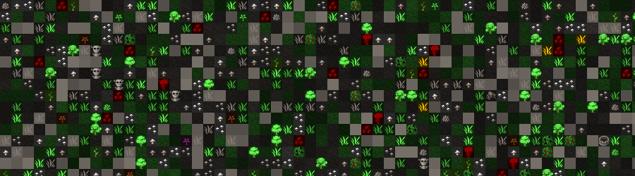
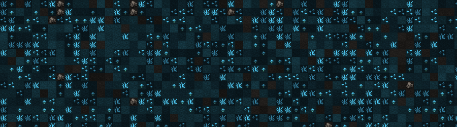
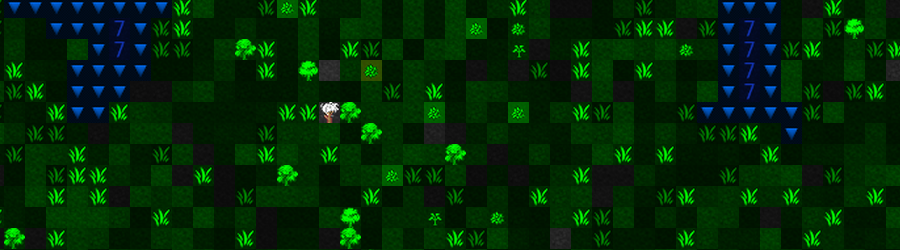

Quicklinks
::: Evil Biomes ::: Good Biomes ::: Savage Biomes :::
::: Sky ::: Surface ::: 1st Cavern ::: 2nd Cavern ::: 3rd Cavern ::: Magma Lake ::: Below Magma Lake :::
The areas in this mod are a lot different from what you are used to. I tried to give each place a different feel and difficulty level. Since no one would volunteer for the difficult parts, there are rewards you can get. Be it valuable trade goods, special ingredients or unique items. The harder you fight, the better your fortress will be in the end. Evil Biomes Evil biomes are essentially the Hard-Mode. More powerful creatures spawn on the surface, corpses reanimate by themselves, even the weather is against you. Rains of blood and sickening sludge, clouds of deadly gas and similar patterns are not uncommon. The mod even adds a few more interactions and weather effects, which are all optional. Seriously though, you will die. Good Biomes Good biomes should make it easier on your dwarves. Random healing and resurrections might occur, animals might learn to speak, or it rains milk and honey. Dwarves in this rain have no hunger for a month. If it rains beer, dwarves wont feel thirst for a month after running around in it. Undead beings might instantly die when entering good regions. All of these changes are optional. Savage Biomes You will encounter more dangerous creatures in savage biomes, but other then that there isn't anything you should be afraid of. It doesn't affect the rate of invasion, snatcher or similar things. Savage areas look exactly like normal areas, the only difference is the amount of creatures that can spawn. SkyThe open space has not been changed at all. Nor have the animals that inhabit it. All of the vanilla birds are still there, and there are only some small additions to them. Most of the additions are realistic birds, and a few are well known creatures of myth. Griffons, Harpies and Gargoyles, to name a few. I know how annoying flying creatures can be, so I did keep the changes here minimal. Previously the sky only reached 15z-lvl up. But thanks to dfhack it is now infinite. Once you reach lvl15 it will add a lvl16, always +1, to infinity and beyond. SurfaceThe surface looks similar to vanilla DF, there is more distinctive grass, but otherwise no big changes. You will notice new grass types for good, evil and savage regions, to help you distinguish them better. Of course normal grass can still grow in these regions. The plants are mostly unchanged, all trees are the same. The wildlife consists of all vanilla creatures, plus a multitude of new animals. I did change the biome tags of many fantastic creatures and modded the frequencies, so I hope you see more unique stuff running around. Some of it might increase the difficulty, but not much. 1st Cavern
The first cavern looks green now. It is a realm of moss and giant mushrooms. It should show a giant cave, with the fitting cave wildlife. The plants are giant shrooms, giving fungiwood when felled. This wood can also be cut into smaller, edible parts in the timberyard. The plants are all the domestic dwarven crops you know. No surprises here. The creatures here have changed a lot. I moved almost all underground creatures from vanilla df to the first cavern. This means you can find cave ogres and cave dragons, and many more difficult creatures from the lower caverns now in the first one. Happy hunting. 2nd Cavern
The second caverns are the crystal caverns. The theme is mostly blue, and instead of plants, moss and shrooms, you have different sorts of crystals and minerals growing here. The plants are actually crystals and named after those, or after certain crystal formations. Some can be felled for what is called crystal wood, a sharp wood-type. The crystal trees can also be broken down into glass pikes and gems at the timberyard. Since these big crystal formations would take too long to grow, you cant farm these. The wildlife is more exotic in this level of the map. You have many gemstone and mineral based entities, like Amethyst-men, gem-scarabs and similar creatures. Slugs, blobs, creepy-crawlers and strange insects also inhabit these underground regions. The enemies are somewhat tougher then in the first cavern, but usually leave items when killed. Many smaller and weaker enemies spawn in big groups, making hunting expeditions down here very rewarding. 3rd Cavern
The third cavern is more of a dungeon then anything else. It looks dark and grey, with strange things going on. Many different special enemies as well as rewards are hidden within. The plants are a mix of actual plants and webs. Invasive vine-leaves and similar organic life fought its way through cracks into these chambers. There are also plants that have their source in the nether, a shadow region where no man goes. Many can be collected and directly processed into special items or drinks. Trees down here give netherwood, which is magically immune to temperature. This blurred and shaded wood can be refined in the timberyard to netherbark, which can be used like leather. Shadethorns also grow down here, hard and black wood, highly prized by collectors. The creatures down here... you don't want to know. Old eldritch horrors, mutated things... Shades and specters, animated armors, long lost adventurers that roam the darkness... eight-legged parasites that infect dwarves and use them to hatch their eggs... everything is corrupted. Only horrors awaits you here, but these horrors give the most exquisite ingredients for your dwarven scholars and scientists. (Actually, its not that bad) Magma Lake
The magma like is unchanged, not much to mod here. There are no grasses, plants or trees. The old vanilla creatures are still there, plus a few additions. Nothing surprising, fire based monsters and animals that crawl up your magma forges. Some give special ingredients, but nothing of importance. Below Magma LakeNothing to see here. |